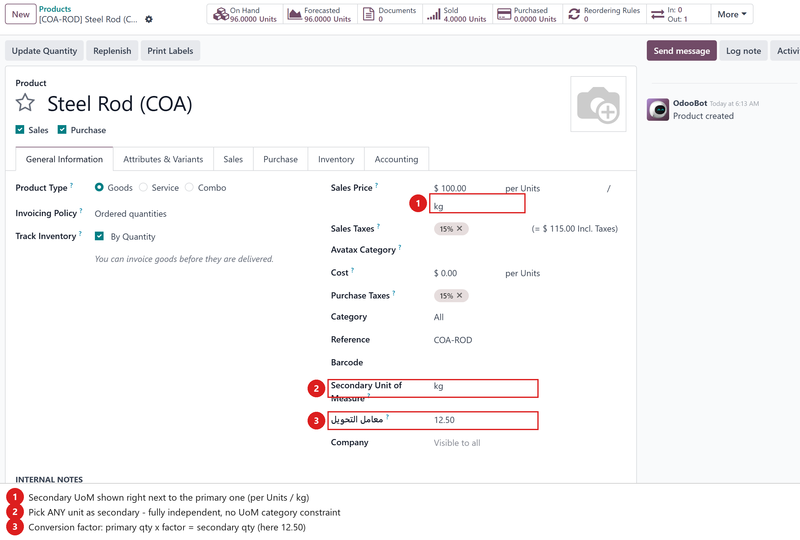
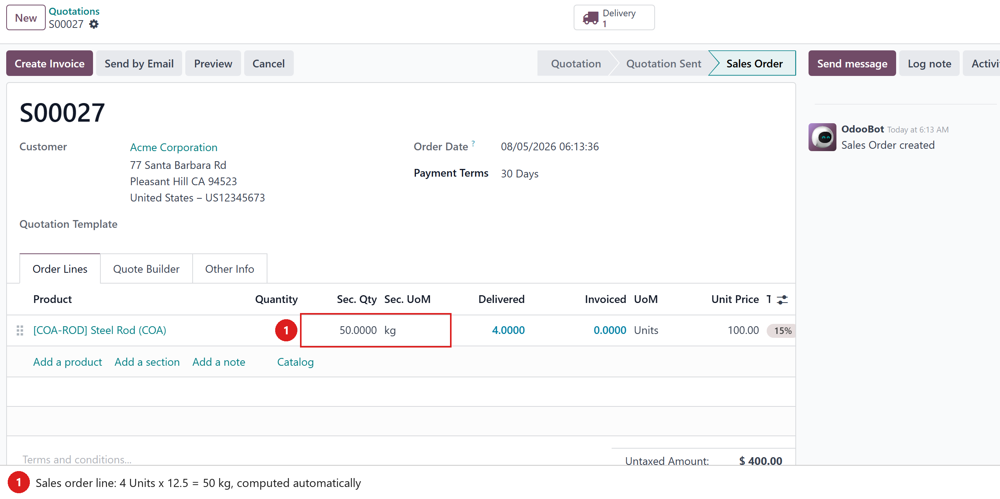
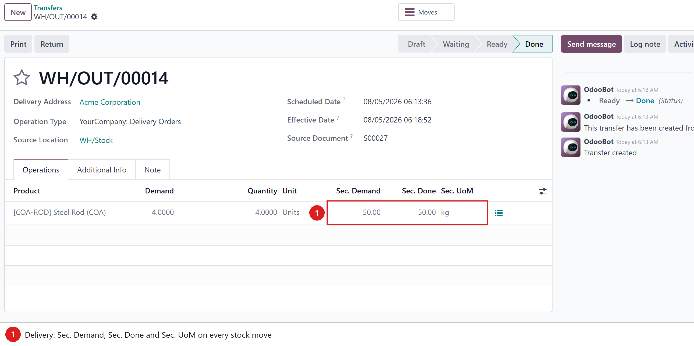
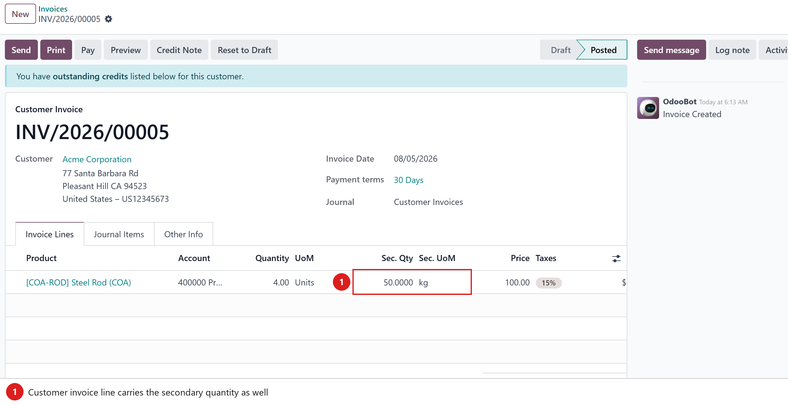

Sell in Units, track in kg — a second, fully independent unit on every product, visible across Sales, Purchases, Inventory, Invoicing and the analysis reports.
Many businesses count the same goods in two units at once: steel rods sold per piece but weighed in kilograms, tiles sold per box but quoted in square meters, fabric in rolls and meters. Odoo’s standard UoM conversion forces both units into the same category with a fixed ratio — which often doesn’t fit the real world.
This module adds a secondary UoM with its own conversion factor per product — any unit, any factor, no category constraints. The secondary quantity is computed automatically on sales orders, deliveries, invoices and stock, and can be entered manually on purchase orders.
Two fields on the product form: the secondary unit and the conversion factor. Steel Rod below is sold per Unit, each unit weighing 12.5 kg.

Order 4 Units and the line instantly shows 50 kg (4 × 12.5) in the Sec. Qty / Sec. UoM columns. The value is stored, so it is also available in the Sales Analysis report as a measure.

Every stock move shows the secondary demand and done quantities; the same figure follows the goods into the Moves History and the on-hand quants.

Invoice lines carry the secondary quantity too, and the Invoice Analysis report gets a Secondary Qty measure (sign-corrected for credit notes) plus a Secondary UoM group-by — so you can answer “how many kilograms did we invoice this month?” in one pivot.

product.template: secondary_uom_id (any
uom.uom) and conversion_factor.sale.report and account.invoice.report are extended through the
official SQL hooks, so pivots and group-bys aggregate correctly.
Tested on Odoo 17, 18 and 19 (Community and Enterprise).
Depends on sale_management, sale_stock, purchase,
stock and account.